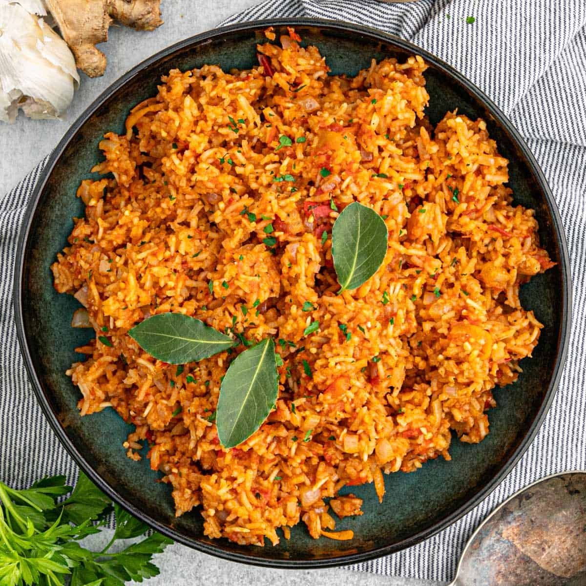

Jollof Rice Recipe

Ingredients
- Red bell pepper
- Vine tomatoes
- Red Onion
- Scotch bonnet peppers
- Vegetable Oil
- Spicez - Garlic, Ginger, Curry powder
- Herbs - Dried bay leaves, dried thyme
- White Basmati Rice
Cooking Steps
- Place the base ingredients (tomatoes, onions, bell peppers, scotch bonnet, spices) in a blender and blitz until smooth.
- Heat the vegetable oil in a large Dutch oven set over a medium heat. Add the onion and cook, stirring occasionally, for 3 minutes, then add the tomato purée and cook, stirring frequently, until it begins to darken, 3 to 5 minutes.
- Pour in the blended base, stir to combine and bring to a simmer. Reduce the heat to medium-low and partially cover the pot with the lid – it will splatter! Cook, stirring occasionally, until the sauce is reduced by about a third of its original volume and the oil begins to separate from the sauce, 12 to 15 minutes.
- Stir in the curry powder, thyme, stock cubes, bay leaves and water. Season generously with salt and pepper, to taste, then cover and bring to a boil over medium-high heat.
- Meanwhile, rinse the rice thoroughly with cold water until the water runs clean, then drain. Add the rice to the sauce and stir to combine. As soon as it comes to a boil, reduce the heat to low, cover the pot and cook for 25 minutes.
- By this point, the rice should have absorbed all the liquid and be cooked through. Remove the bay leaves, give the rice a stir and you’re ready to serve, preferably with grilled chicken and fried plantain.